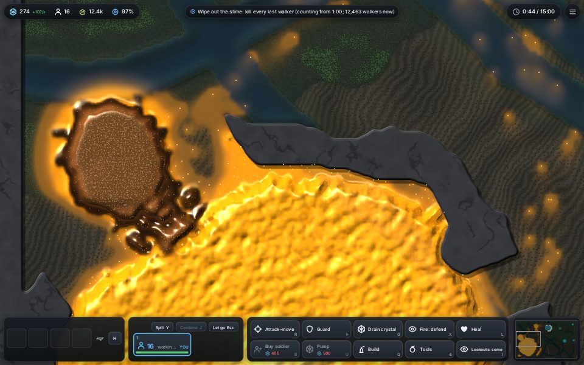
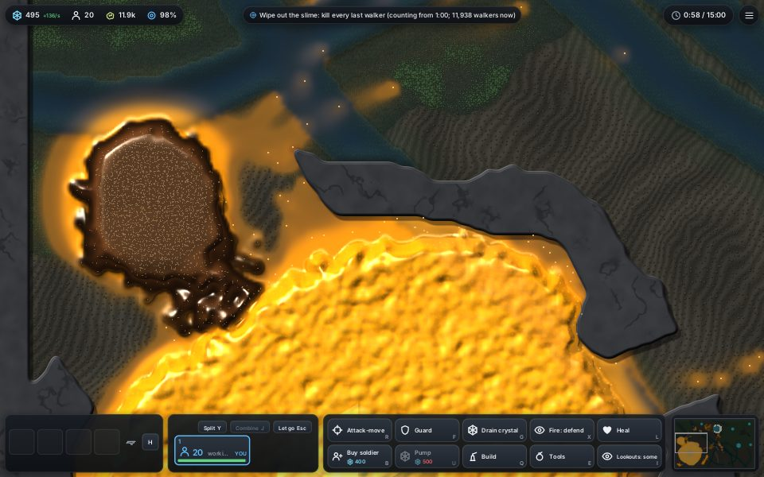
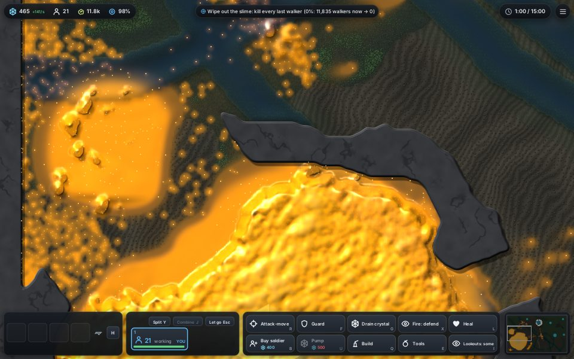
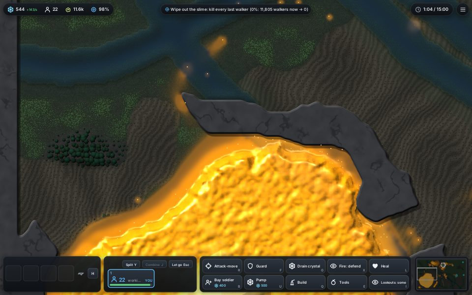
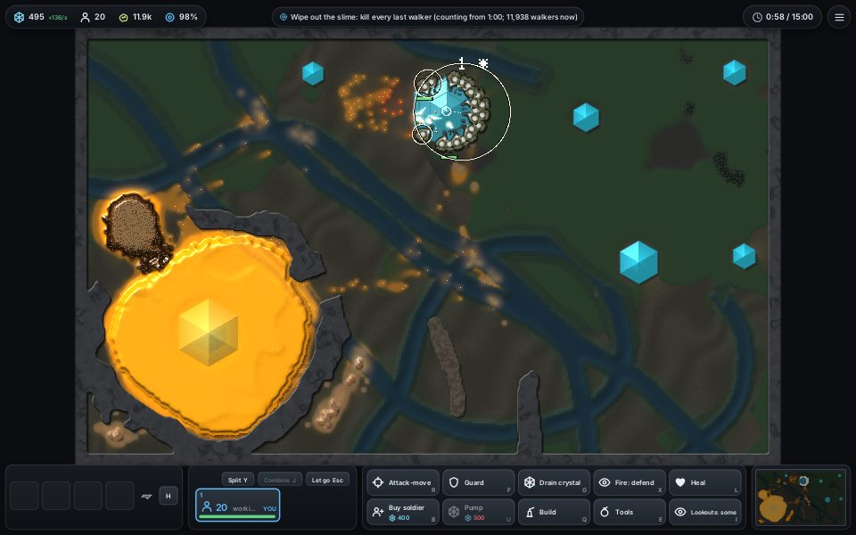
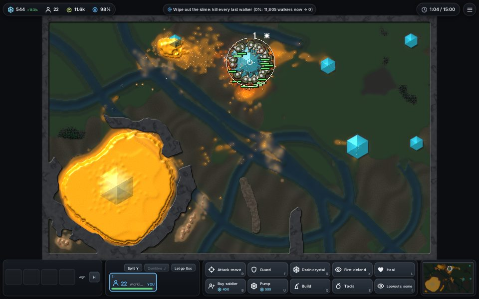

<title>Slime Fruiting</title>
<meta name="claude:viewport-fit-sides" content="cover">
<link rel="stylesheet" href="https://fonts.googleapis.com/css2?family=Bricolage+Grotesque:opsz,wght@12..96,600;12..96,750&family=Source+Sans+3:wght@400;600&family=JetBrains+Mono:wght@400&display=swap">
<style>
/* Layout: one reading column; the knot's life told in order (forms, ripens, bursts, lands), then a planet played with it on and off */
:root{
  --bg:#f2f0ea; --panel:#e6e2d6; --fg:#1e1b16; --muted:#5f5a4e;
  --accent:#7a4a1e; --soft:#efe2cf; --line:#cdc6b4;
  --display:"Bricolage Grotesque", "Segoe UI", system-ui, sans-serif;
  --body:"Source Sans 3", "Segoe UI", system-ui, sans-serif;
  --mono:"JetBrains Mono", ui-monospace, Consolas, monospace;
}
@media (prefers-color-scheme: dark){:root:not([data-theme="light"]){
  --bg:#15120e; --panel:#221d17; --fg:#ece6db; --muted:#a89f8e;
  --accent:#d39a5e; --soft:#30261b; --line:#3b3228; color-scheme:dark}}
:root[data-theme="dark"]{
  --bg:#15120e; --panel:#221d17; --fg:#ece6db; --muted:#a89f8e;
  --accent:#d39a5e; --soft:#30261b; --line:#3b3228; color-scheme:dark}
body{background:var(--bg);color:var(--fg);font:17px/1.55 var(--body);margin:0;
  padding-left:max(16px,env(safe-area-inset-left,0px));padding-right:max(16px,env(safe-area-inset-right,0px));padding-block:28px 64px}
main{max-width:1180px;margin:0 auto;display:flex;flex-direction:column;gap:32px}
h1,h2,h3{font-family:var(--display);text-wrap:balance;line-height:1.15;margin:0}
h1{font-size:2.3rem;font-weight:750}
h2{font-size:1.45rem;font-weight:750;border-top:2px solid var(--accent);padding-top:14px}
h3{font-size:1.08rem;font-weight:600}
p{margin:0}
section{display:flex;flex-direction:column;gap:14px}
.lede{color:var(--muted);font-size:1.02rem;max-width:760px}
.eyebrow{font:12px/1 var(--mono);letter-spacing:.08em;text-transform:uppercase;color:var(--accent)}
.prose{max-width:760px;display:flex;flex-direction:column;gap:10px}
code{font:0.86em var(--mono);background:var(--panel);padding:1px 4px;border-radius:3px}
.grid{display:grid;grid-template-columns:repeat(2,minmax(0,1fr));gap:16px}
.grid4{display:grid;grid-template-columns:repeat(4,minmax(0,1fr));gap:12px}
@media (max-width:900px){.grid4{grid-template-columns:repeat(2,minmax(0,1fr))}}
@media (max-width:720px){.grid{grid-template-columns:minmax(0,1fr)}}
@media (max-width:460px){.grid4{grid-template-columns:minmax(0,1fr)}}
figure{margin:0;display:flex;flex-direction:column;gap:6px;min-width:0}
figure video,figure img{width:100%;height:auto;display:block;border-radius:6px;border:1px solid var(--line);background:#000}
figcaption{display:flex;flex-direction:column;gap:2px;font-size:.92rem;color:var(--muted)}
.side{font:750 1.05rem/1.2 var(--display);color:var(--fg)}
.counts{font:13px/1.4 var(--mono);color:var(--fg);font-variant-numeric:tabular-nums}
.note{background:var(--soft);border-radius:8px;padding:16px 18px;max-width:760px;display:flex;flex-direction:column;gap:8px}
ul{margin:0;padding-left:1.2em;display:flex;flex-direction:column;gap:8px;max-width:760px}
.tablewrap{overflow-x:auto;max-width:100%}
table{border-collapse:collapse;font-variant-numeric:tabular-nums;font-size:.95rem;min-width:520px}
th,td{text-align:right;padding:6px 12px;border-bottom:1px solid var(--line)}
th:first-child,td:first-child{text-align:left}
th{font:600 .85rem/1.2 var(--body);color:var(--muted)}
td.mono{font-family:var(--mono);font-size:.86rem}
footer{font-size:.85rem;color:var(--muted);max-width:760px;display:flex;flex-direction:column;gap:6px}
</style>
<main>
<header style="display:flex;flex-direction:column;gap:10px">
  <span class="eyebrow">Larder World · Enemy · 2026-11-20</span>
  <h1>A beaten slime fruits</h1>
  <p class="lede">Your note: "once I get strong enough there is just lots of shooting through masses of uniform orange". Real slime mould fruits when it starves. Now, once your squad has killed a fifth of the slime's mass in 30 seconds, the slime streams part of itself into one dark knot deep in its body, out of your guns' reach. The knot swells and darkens for 30 seconds and then bursts, throwing its walkers over the planet as spores that land on food and grow there as new slime. Push in and shoot it below a third of its size and it falls apart into plain slime before it can burst.</p>
</header>

<section>
  <h2>The knot, start to burst</h2>
  <p class="prose">Planet 1, run seed 1, the greedy hand, with the fruit forced early (from 0:30, the kill test off) so the camera can sit on it. Each clip is half a second a frame, a quarter round the burst at 1:00.</p>
  <div class="grid">
    <figure>
      <video src="fruit12.mp4" poster="ripe12.jpg" autoplay muted loop playsinline aria-label="The knot at zoom 12, forming, darkening and bursting"></video>
      <figcaption><span class="side">Zoom 12</span><span class="counts">0:28 to 1:28 · knot 1,113 walkers at 0:31, 2,271 at 0:54 · burst 1:00</span></figcaption>
    </figure>
    <figure>
      <video src="fruit6.mp4" poster="ripe6.jpg" autoplay muted loop playsinline aria-label="The knot at zoom 6, forming, darkening and bursting"></video>
      <figcaption><span class="side">Zoom 6</span><span class="counts">same film · 2,271 thrown as spores · its place empty by 1:04</span></figcaption>
    </figure>
  </div>
  <div class="grid4">
    <figure>
      <figcaption><span class="side">Ripening</span><span class="counts">0:44 · 2,004 members · ripe 0.47</span></figcaption></figure>
    <figure>
      <figcaption><span class="side">Ripe</span><span class="counts">0:58 · 2,271 members · ripe 0.93</span></figcaption></figure>
    <figure>
      <figcaption><span class="side">Burst</span><span class="counts">1:00.5 · 2,271 spores in the air</span></figcaption></figure>
    <figure>
      <figcaption><span class="side">Sown</span><span class="counts">1:04 · the place empty, spores landing on food</span></figcaption></figure>
  </div>
  <div class="grid">
    <figure>
      <figcaption><span class="side">The planet, knot ripe</span><span class="counts">0:58 · slime 11,894 · squad far right</span></figcaption></figure>
    <figure>
      <figcaption><span class="side">The planet, just after</span><span class="counts">1:04 · slime 11,805 · spores spread across the left half</span></figcaption></figure>
  </div>
</section>

<section>
  <h2>As it comes in play</h2>
  <p class="prose">Planet 1, run seed 1, the strategy bot with 20,000 to spend (80 soldiers by 1:30), played to the end with fruiting on and off. One game each, so these are first numbers. The bot does not aim at the knot, so it never breaks one.</p>
  <div class="tablewrap"><table>
    <thead><tr><th></th><th>Fruiting on</th><th>Fruiting off</th></tr></thead>
    <tbody>
      <tr><td>First knot</td><td class="mono">1:39 to 2:07, 1,836 walkers, burst with 1,693</td><td class="mono">none</td></tr>
      <tr><td>Second knot</td><td class="mono">2:47 to 3:17, 1,245 walkers, burst with 1,238</td><td class="mono">none</td></tr>
      <tr><td>Slime at 3:00</td><td class="mono">5,639</td><td class="mono">2,484</td></tr>
      <tr><td>Slime at 3:40</td><td class="mono">1,440</td><td class="mono">31</td></tr>
      <tr><td>Planet cleared</td><td class="mono">not by 4:00 (562 left)</td><td class="mono">3:53</td></tr>
      <tr><td>Walkers killed by 4:00</td><td class="mono">27,517</td><td class="mono">23,999 (at 3:53)</td></tr>
      <tr><td>Squad health at the end</td><td class="mono">0.72</td><td class="mono">0.84</td></tr>
    </tbody>
  </table></div>
  <p class="prose">With it on the planet lasted past 4:00 instead of ending at 3:53, the squad killed 3,500 more walkers and ended on 0.72 of its health instead of 0.84. The second knot burst with the squad 23 cells away: in the next ten seconds its health fell from 0.85 to 0.73 and four of its five pumps went down. Both bursts came while the slime was already being cut hard, and the spores kept it alive past the end of the other game.</p>
</section>

<section>
  <h2>What it is made of</h2>
  <ul>
    <li><b>The knot</b> is a lump, the same thing the mini-bosses and marches are: 8% of the slime (200 to 2,500 walkers) pulled hard to one spot, each member taking two blows. Every 3 seconds it draws in the slime round its rim, up to twice what it first held.</li>
    <li><b>Where</b>: the thickest patch of slime at least your guns' reach plus 15 cells from every soldier, so you have to go in after it.</li>
    <li><b>The burst</b> is one pass on the GPU that throws every walker near the knot straight out as a spore. Past half its flight a spore homes on food, and it lands as living slime.</li>
    <li><b>The look</b> is its members, drawn with a dark skin: rust darkening to umber as it ripens, mottled where they pack tightest, with a faint light and cream points inside. The colours are open to change.</li>
  </ul>
  <div class="note">
    <h3>Next from the same list</h3>
    <p>A slime that reads its losses: losing walkers faster than it grows, it pulls back out of range, masses, and comes in waves from two or three sides at once. The other ideas were a heartbeat from the home crystal, a rind on the side being shot, and a slime that splits into two strains that eat each other once its crystals run dry.</p>
  </div>
</section>

<footer>
  <p>Software GPU (llvmpipe) in the cloud; frame cost on the GTX 1070 not measured yet. The burst is one pass in the second it bursts; the rest is CPU work once a game second.</p>
  <p>Source: <code>Reports/fruiting-2026-11-20/</code>. Commands in its README.</p>
</footer>
</main>
